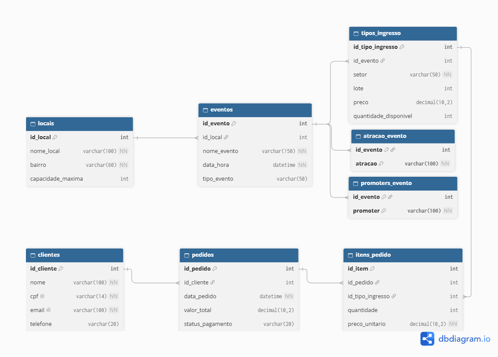

1. Domínio do Banco de Dados
Sistema focado no gerenciamento e comercialização de ingressos, loteamento e organização das festas e shows exclusivos promovidos pela produtora MySelf.
2. Contextualização e Problemas
A MySelf organiza eventos de trap underground. Sem um SGBD relacional, a operação enfrentava:
- Risco de Overbooking: Vendas acima da capacidade do local por falta de controle centralizado.
- Descontrole de Lotes: Mudanças manuais de preços geravam prejuízos.
- Duplicidade: Clientes cadastrados várias vezes em planilhas diferentes.
4. Modelagem Lógica (DER)
Abaixo está a representação visual das tabelas e relacionamentos do banco de dados:

5. Aplicação das Formas Normais
1FN
Campos atômicos (sem listas ou emails repetidos na mesma coluna).
2FN
Atributos dependem 100% da chave primária das tabelas.
3FN
Sem dependências entre colunas não-chave (dados de locais em tabela própria).
4FN
Atrações e Promoters separados para evitar tabelas duplicadas.
6. Teste de Consultas SQL
Clique em uma consulta abaixo para visualizar o comando SQL correspondente:
Selecione uma consulta
-- O código SQL aparecerá aqui ao clicar no botão